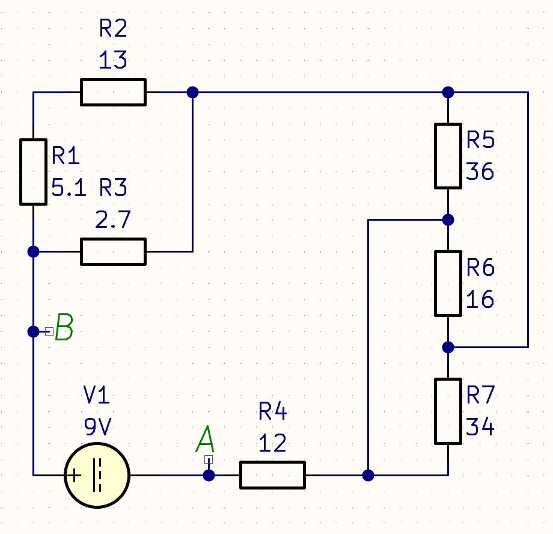

На главную
Задача №4
Дано:
- R1 = 5.1 Ом,
- R2 = 13 Ом,
- R3 = 2.7 Ом,
- R4 = 12 Ом,
- R5 = 36 Ом,
- R6 = 16 Ом,
- R7 = 34 Ом,
- E = 9 В

Найти:
Rab,Iab - ?
Решение:
Разобьём цепь на 3 участка:
Rучаст.1 = 1/(1/(R1 + R2) + 1/R3) = 1/(1/(5.1 + 13) + 1/2.7) = 2.349519231
Ом,
Rучаст.2 = 1/(1/R5 + 1/R6 + 1/R7) = 1/(1/36 + 1/16 +1/34) = 8.354948805
Ом,
Rab = Rучаст.1 + Rучаст.2 + R4 = 2.349519231 + 8.354948805 + 12 =
22.704468036 Ом,
Iab = E / Rab = 9 / 22.704468036 =
0.396397748 А.
Ответ:
- Эквивалентное сопротивление A - B равно 22.704468036 Ом,
- Ток в цепи между A - B равен 0.396397748 А.